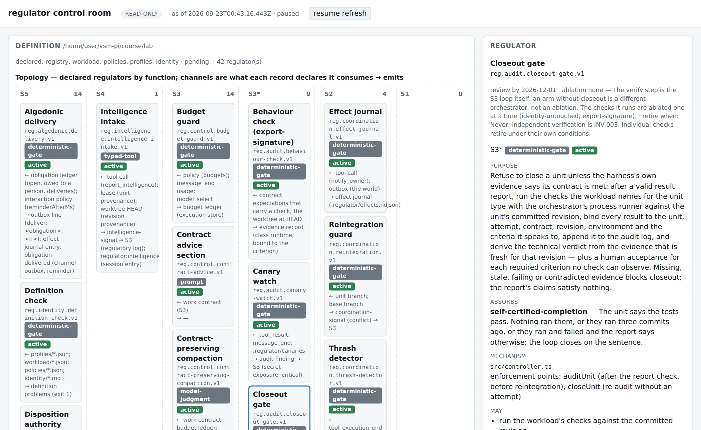

VSM-Pi asks whether Stafford Beer's can run inside an autonomous coding agent — not as five chatbot personas, but as explicit functions, authority boundaries, typed channels, verification gates, and feedback loops. It ships its own to find out. Viable Agents, the course, builds it lesson by lesson — this page is the reference for what's actually running underneath it.
A coding-agent harness built on Pi, with a typed VSM control plane layered on top of it — designed against one recurring failure mode of autonomous agents: architectural drift that outruns anyone's ability to review it.
packages/
protocol/ VSM vocabulary + runtime schemas — messages, trace,
effects, profiles, registry, contracts, execution,
policy, recovery, audit, obligations, memory
core/ authority (write preflight), leases, thrash detector,
execution store, signal sink, budgets, recovery
router, effect journal, audit log, obligation ledger
and router, identity + memory stores, definition
check, registry check + REGULATORS.md / BOUNDARY.md
checks/ deterministic S3* checks: host-run verification
bound to a revision, the technical verdict
pi-extension/ Pi lifecycle integration, S5 write gate, typed
proposal / audit-finding / uncertainty tools
cli/ `regulator status`: the read model over a
definition and an instance
control-room/ read-only page over the read model
course/lab/ reference build — checkpoints 0–14, three fixtures,
the registry (42 records), identity, profiles, policies,
the drift eval suite and its committed reports,
workload, the `regulator` CLI; installs as a pi
package, OPERATING.md says who runs what
course/modules/ lessons 01–15, written
docs/ architecture, roadmap, design notes, DEBT.md
vsm/ committed S5 artifacts for this repo itself
Promotion is a standing rule, not a one-off: a checkpoint's Pi-free module moves from
course/lab into packages/ once two lessons depend on it, and
the lab imports it back rather than re-implementing it.
Stafford Beer's Viable System Model comes out of management cybernetics, not software: it asks what any system — an organism, a company, an autonomous agent — needs structurally to keep operating as its environment keeps generating more variety than it can be made to predict. Beer's answer is five functions plus an independent audit: operations that touch the world (S1), coordination that keeps them from colliding (S2), control that decides what happens next (S3), intelligence that watches the environment and the future (S4), and identity that says what the system is and isn't allowed to become (S5) — checked by a function that never just takes the operators' word for it (S3*).
Why this matters specifically for an agent harness: the model is not a deterministic component. It changes across versions, has no memory of last quarter's incident, and treats a prompt as advice it can — and under pressure, will — ignore. A harness that regulates entirely through prompt text has exactly as much regulatory variety as the words in that prompt, which is provably less than the variety of a real codebase, a real filesystem, or real money moving. VSM doesn't remove the model's judgment; it gives that judgment a boundary it can't talk its way out of.
Beer's Viable System Model, read as a harness architecture. Regulatory variety flows down as attenuated instruction and back up as amplified evidence — S3* audits independently of what S1 reports, and S4 argues with S3 about the future on S5's terms.
| Function | Initial VSM-Pi interpretation |
|---|---|
| S1 · Operations | Coding, data, UI, infrastructure, migration, and integration capability profiles |
| S2 · Coordination | Tool contracts, worktree isolation, leases with liveness, reintegration, anti-oscillation mechanisms |
| S3 · Control | The orchestrator — work contracts, dispatch, budgets, the recovery lattice, execution-state authority |
| S3* · Audit | Harness-run verification plus architectural/domain checks and independent audit findings |
| S4 · Intelligence | Read-only specialists and external/environmental intelligence feeding planning and reassessment |
| S5 · Identity/Policy | Versioned product identity, architecture, domain model, invariants, and policy |
When adding a feature to the harness, VSM-Pi walks this ladder from the top down — reach for the highest level that can actually do the job, and only fall further down when it can't. If you can write the check, don't write the paragraph.
The project does not scope itself as a regulation layer riding on
GSD-Pi's workflow kernel. GSD-Pi is
mid-cutover to a database-authoritative lifecycle, OpenGSD is fanning out into separate
projects, and the course lab already proved the regulation layer needs an
orchestrator, not GSD's — ten checkpoints of gates, effects, profiles, leases,
contracts, budgets, recovery, audit and authority run on bare Pi. packages/
has no GSD dependency; GSD-Pi stays in the course purely as comparison material.
How a unit runs through the loop is drawn out on its
own page.
Nothing but the S3
loop, generic over , with , budgets, and as immutable records.
All five stages exist in course/lab/src/controller.ts:
What made GSD heavy — seven fixed phases, milestone lifecycles, UAT, projections — is workload, and lives in a workload definition, not in this loop. Recovery decisions cite a versioned policy; is refused on anything but fresh, host-run evidence.
The software-development autoloop is the first , and the one the course builds against its fixture repository — "build my own GSD" satisfied by declaring one rather than adapting it:
six unit types, declared in workload/software-development.json, each naming:
implement may write src/ and test/; research is read-only by declared effectrun_checks, run_tests — bound to the revision they ran againstresearch unit is routed into an that holds the units it names until a person or S3 dispositions it — never applied, never replannedFour things are true today, each running end to end rather than sketched.
regulator init installs it into an existing repository under a declared manifest; doctor checks the instance before the first unit and in CI; the base is re-verified after every merge and a failure holds the whole instance; refused words are linted out; the outbox is watched; an identity decision promotes back into the definition.What remains is the capstone. course/lab is the reference build; each checkpoint promotes into packages/ as it stabilizes. What the build still owes is listed in docs/DEBT.md.
REGULATORS.md and BOUNDARY.md generated from the recordsA projection of registry ∪ execution store ∪ regulatory state. It
owns no state of its own — every screen is read from records that already exist
elsewhere. packages/control-room serves this page today, over the
built by regulator status.

More of the page — units, leases and obligations for a live instance; the assurance and lifecycle views; a unit's full replay — is on the worked example and how it works.